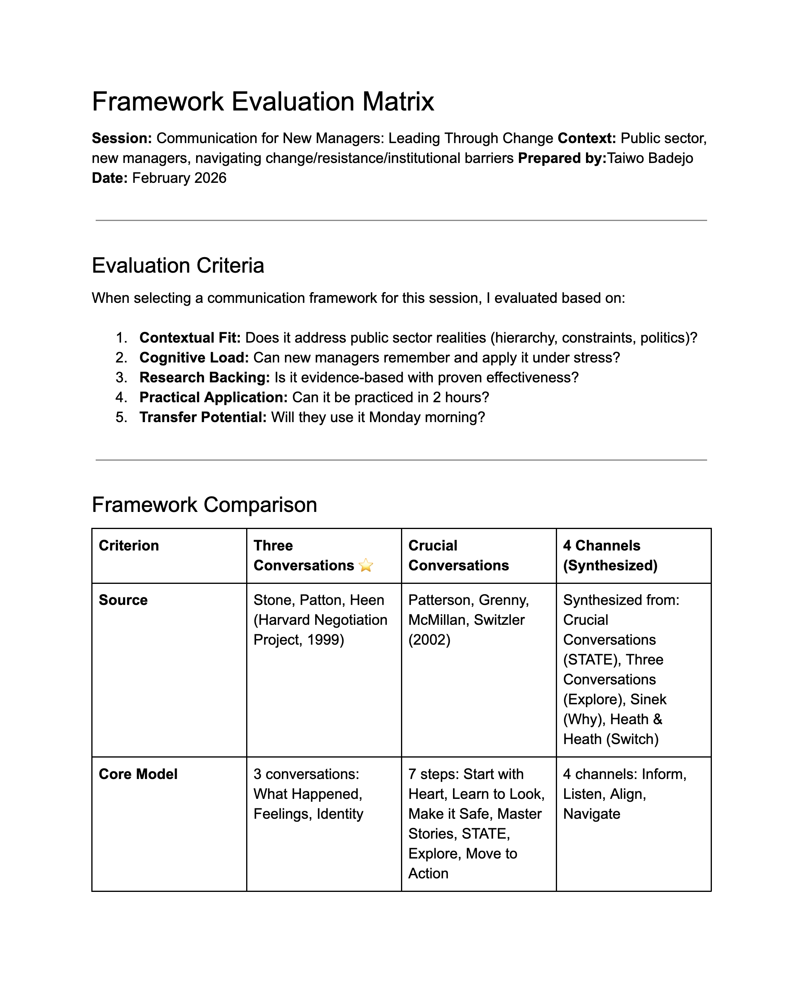
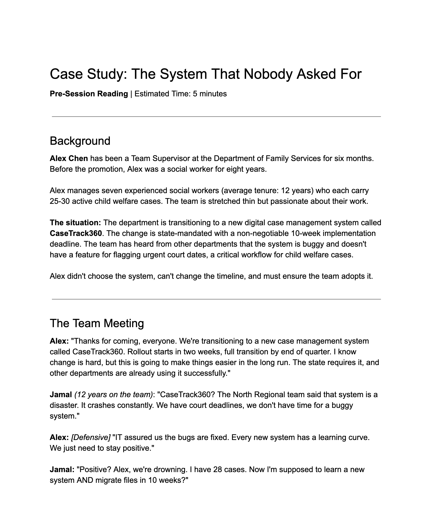
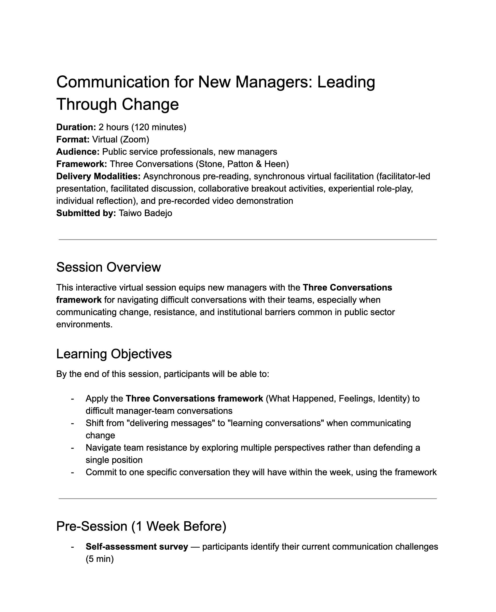
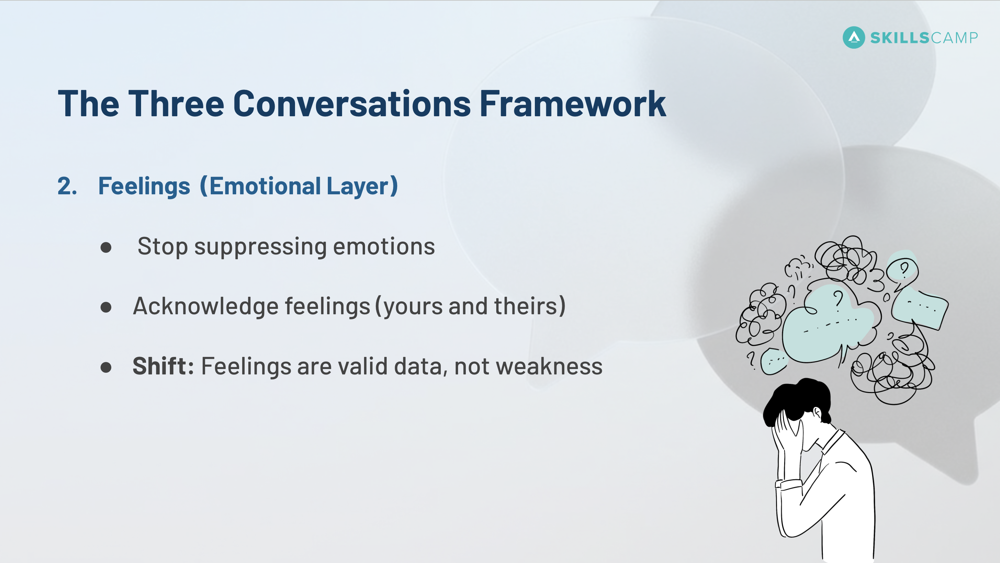
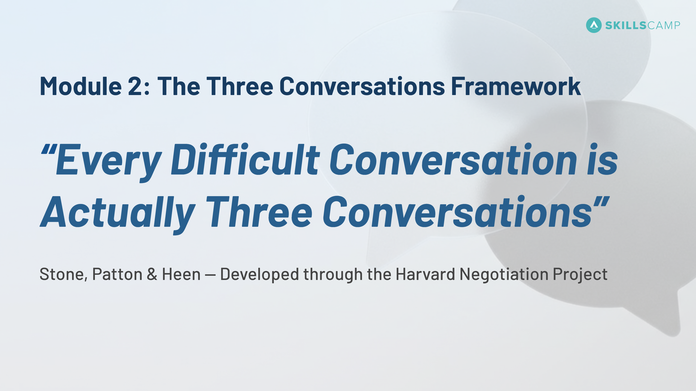
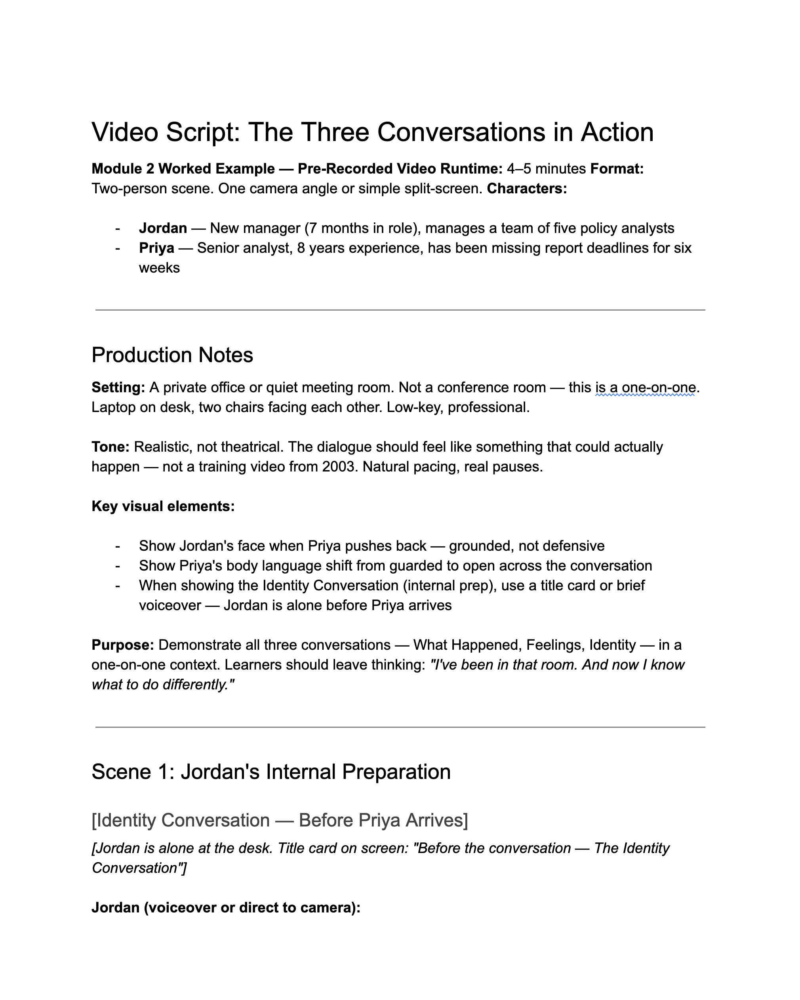

A complete 2-hour virtual workshop design for new public sector managers, grounded in Kolb's Experiential Learning Cycle, the Three Conversations framework, and four production-ready deliverables.
At a Glance
Learning consultancy needed a 2-hour virtual workshop for new public sector managers on change communication.
Design a 4-deliverable, production-ready workshop in 1 week as part of an interview assignment.
Weighted framework evaluation; Kolb-grounded design with 4 reflection pauses; pre-work structured as pattern discovery.
Reflection pauses, two-scenario structure, and video approach all validated as pedagogically sound.
The Challenge
A learning consultancy requested a complete instructional design for a 2-hour virtual workshop targeting new public sector managers. The session needed to equip participants with practical skills for navigating team communication during organizational change, specifically addressing resistance, institutional barriers, and difficult conversations.
My Approach
Rather than defaulting to a familiar model, I evaluated two research-backed communication frameworks against the specific needs of public sector managers: Crucial Conversations (Patterson et al.) and Three Conversations (Stone, Patton & Heen, Harvard). I built a weighted matrix scoring each across five criteria: cognitive load, research backing, power dynamics, feelings normalization, and public sector fit.

Framework Selection
Three Conversations: 8.65 / 10
Scored highest across five criteria: cognitive load, research backing, power dynamics, feelings normalization, and public sector fit.
I grounded the design in Kolb's Experiential Learning Cycle, which requires moving through four stages: Concrete Experience, Reflective Observation, Abstract Conceptualization, and Active Experimentation. Most training skips Reflective Observation by jumping directly from experience to conceptualization. I designed four explicit reflection pauses totaling 12 minutes — 10% of session time — to prevent this common failure.
I also applied Knowles' andragogy principles: adult learners need relevance, autonomy, and respect for their existing knowledge. The design honors this through realistic scenarios, learner choice in practice rounds, and peer feedback rather than top-down evaluation.
I created a pre-work case study featuring Alex Chen, a social work supervisor announcing a state-mandated system change to a resistant team. The case was deliberately designed to violate all three conversations: Alex argues for one truth, suppresses feelings, and gets defensive when challenged.
Learners arrive at the session having already identified patterns that don't work. Module 1 surfaces those observations and transitions directly into the framework, making the introduction feel discovered, not delivered.

Frameworks & Theories Applied
The Solution
I delivered four integrated components: a session agenda, training slides with speaker notes, a pre-work case study, and a pre-recorded video script. Together they form a production-ready package a facilitator could pick up and run. The video script replaced live role-play because in a 2-hour virtual session, live demonstrations carry real facilitation risk: volunteer reluctance, unpredictable quality, setup time. A pre-recorded video is reliable, controllable, and accessible with captions.




Design Decisions
Kolb's Reflective Observation stage is the most commonly skipped element in training design. I made it explicit and non-negotiable with four timed pauses at precise moments: after pre-work review, after the video demonstration, after the first practice round, and before action planning. Silence on Zoom feels awkward. It's also where experience converts to insight.
The pre-work case study (Alex Chen, group announcement) and the video demonstration (Jordan and Priya, one-on-one performance conversation) use different contexts intentionally. This shows learners the Three Conversations framework isn't just for one type of situation; it transfers across the full range of difficult conversations managers face.
Module 3 — the largest block at 40 minutes — includes two structured practice rounds with peer feedback between them. Learners try the framework, receive observations from peers, reflect, then try again. This is deliberate practice in the Ericsson sense: not activity for its own sake, but the specific cycle of attempt, feedback, and refinement that builds durable skill.
Outcomes
Interview Assignment FeedbackReflection
Theory informs practice, but context drives decisions. I didn't choose Three Conversations because it's the most well-known framework. I chose it because the weighted evaluation showed it fit the specific reality of public sector managers navigating power asymmetry and decisions made elsewhere.
Reflection isn't optional. Kolb's cycle isn't complete without Reflective Observation. Most training skips it because silence feels unproductive. Designing those four pauses explicitly — with timing, purpose, and facilitation cues — was one of the highest-leverage decisions in the whole design.
Design is collaborative, not solitary. The SME touchpoints throughout the design weren't extras; they were essential. Scenario validation, practice round development, video script review, and pilot feedback require subject matter expertise that instructional designers don't have and shouldn't pretend to.